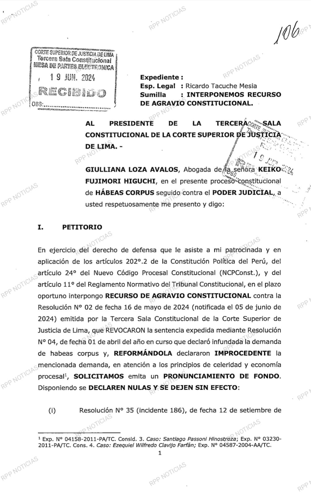
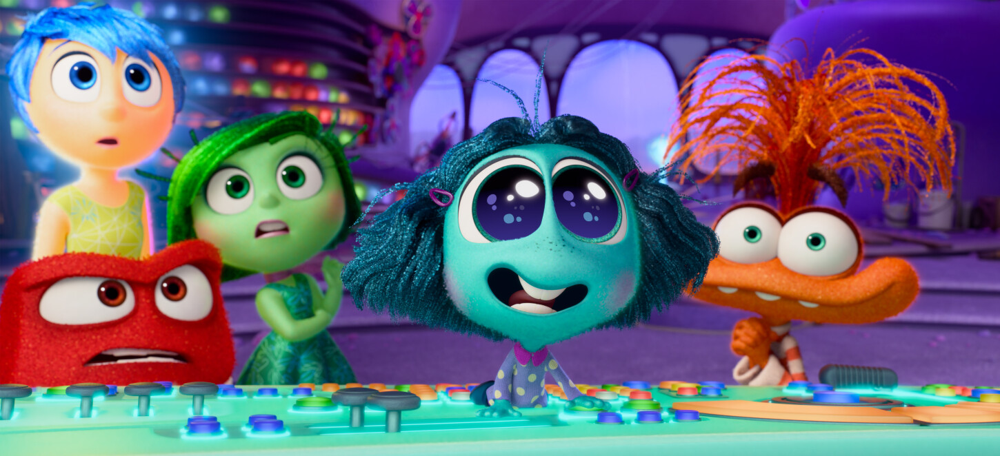

Últimas Noticias
Las noticias más recientes y relevantes de última hora.
Las noticias más recientes y relevantes de última hora.
Barcelona busca reforzar la delantera con Nico Williams, tras su gran actuación con la Selección de España en la Eurocopa 2024. A raíz de su talento mostrado en la Eurocopa, Nico Williams se volvió uno de los futbolistas más cotizados en el mercado. El Barcelona es uno de los equipos que buscan contar con él como próximo fichaje, es por eso que ya hay una conversación entre el club culé y el agente del extremo.
Según el programa español 'Jijantes', ya hay un acercamiento entre el entorno del futbolista del Athletic Club y los azulgranas de cara a este verano europeo. Su fichaje es el objetivo número uno de la escuadra española. Félix Tainta, agente del futbolista, se reunió con Deco, director deportivo del Barcelona, en el Hotel Palafox de Zaragoza, agrega la información.
Dupla con Lamine Yamal La principal razón por la que Barcelona busca fichar a Nico Williams es por la gran conexión que tuvo con Lamine Yamal en la Eurocopa 2024. Al finalizar el torneo europeo, con el visto bueno del alemán Hansi Flick, el Barca lanzó su propuesta por el extremo.
Fiscalía pide 30 años y 10 meses de prisión para la lideresa de Fuerza Popular. Sin embargo, la defensa de Fujimori argumenta ante el TC que viene siendo procesada por delitos que no estaban tipificados en el Código Penal al momento en que se cometieron. La lideresa de Fuerza Popular, Keiko Fujimori, recurrió este miércoles al Tribunal Constitucional para anular el juicio oral por el caso Cócteles y archivar el proceso penal por los delitos de lavado de activos, organización criminal, entre otros. Giuliana Loza, abogada de Fujimori Higuchi, presentó un recurso de agravio constitucional contra la resolución judicial de segunda instancia que declaró improcedente el habeas corpus a favor de su defensa. Lo que busca este recurso de Keiko Fujimori es que se declare nulas tres resoluciones dictadas por el juez Victor Zúñiga, del Cuarto Juzgado de Investigación Preparatoria Nacional. Estas son por el inicio del juicio oral del caso Cócteles y las que declararon infundados los pedidos para archivar los delitos de lavado de activos y organización criminal.
El argumento principal del habeas corpus es que los presuntos aportes ilícitos a las campañas presidenciales de 2011 y 2016 en Fuerza Popular no estaban tipificados en el Código Penal al momento en que se cometieron. Además, según la defensa de la excandidata, se le estaría imputando el delito de financiamiento ilegal de partidos políticos, algo que fue incorporado en la legislación penal en 2019.
Por quinto fin de semana consecutivo, la película de Disney y Pixar se mantiene como la favorita del público en los cines, continuando su racha de récords tanto en Perú como a nivel mundial. Imparable. IntensaMente 2 ha completado su primer mes en cartelera y continúa batiendo récords. La más reciente producción de Disney y Pixar se ha convertido en la tercera película más vista en la historia del Perú, superando los tres millones y medio de espectadores. Además, por quinto fin de semana consecutivo, ha liderado la taquilla nacional.
Desde su estreno el 13 de junio, la película animada, una secuela que tardó nueve años en llegar a los cines, ha cautivado al público peruano, alcanzando los 3.5 millones de espectadores, según reveló el experto en cine Maykoll Calderón. A principios de julio, ya se había consolidado como la película más vista del año hasta el momento en Perú. ¿Cuáles son las cinco películas más vistas en la historia del cine peruano? En la lista de las cinco películas más vistas en la historia peruana, Intensamente 2 ocupa el tercer lugar, precedida por Avengers: Endgame y Transformers: El despertar de las bestias, con 3.8 y 3.7 millones de espectadores, respectivamente. Completan el top 5 El rey León y Súper Mario Bros, La película. Con la entrada de esta secuela, Toy Story 4 ha salido del top 10. Aunque la preferencia del público sigue siendo Intensamente 2, esto podría cambiar en las próximas semanas. El 25 de julio llega a Latinoamérica Deadpool & Wolverine, una película que ha generado gran expectativa por el regreso de Hugh Jackman como el legendario superhéroe de Marvel, junto a Ryan Reynolds.
¿Cómo le va a Intensamente 2 en la taquilla mundial? La película IntensaMente 2, la nueva apuesta de Disney y Pixar, se ha convertido en la primera película en superar los mil millones de dólares en recaudación global en 2024, logrando este récord apenas 19 días después de su estreno. Este logro es especialmente significativo para una película animada, según informó Disney. Desde entonces, la película animada ha liderado la taquilla mundial después de superar a Dune 2, que ocupó ese puesto durante la primera mitad de 2024. Actualmente, la cinta dirigida por Kelsey Mann ha recaudado 1.350.092.777 dólares en todo el mundo y se espera que duplique esta cifra en las próximas semanas.
